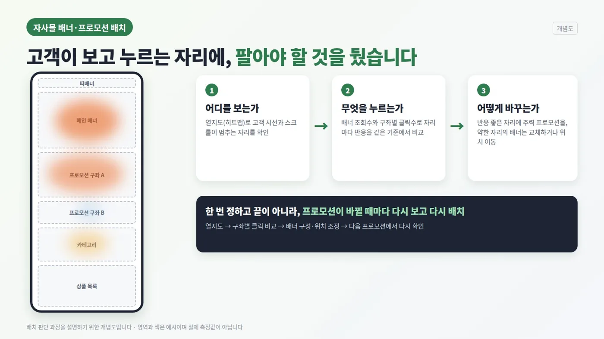
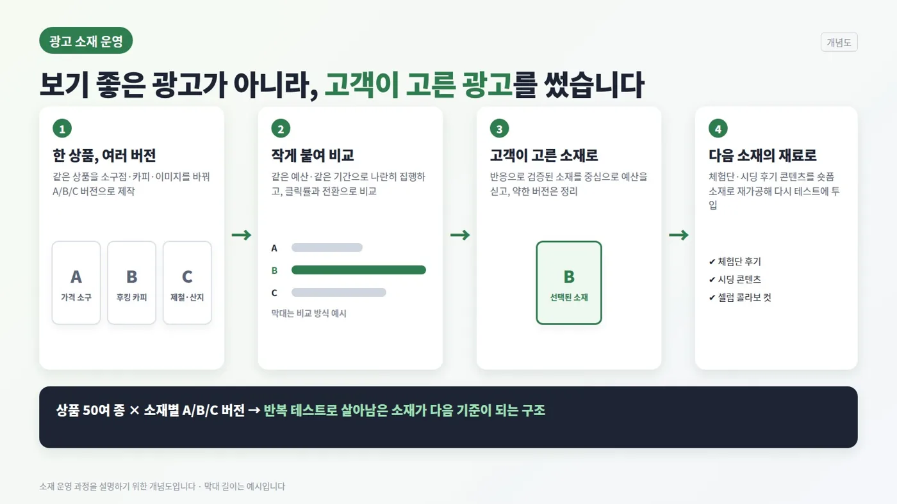
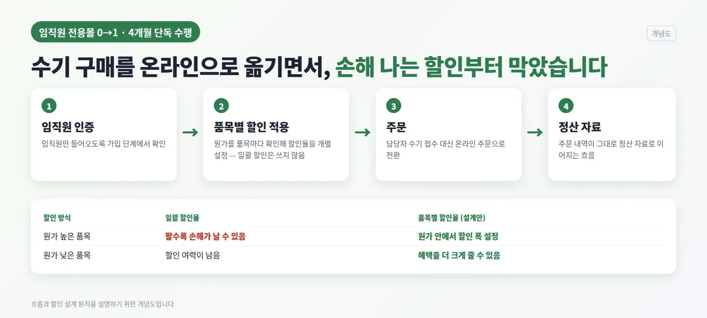

커머스 · 자사몰 PM
셰프애찬 자사몰 — 메인 화면과 이벤트 운영
식품 브랜드 자사몰에서 고객 행동 데이터와 테스트 결과를 바탕으로 메인 화면, 광고 소재, 이벤트를 운영한 경험
01고객 데이터를 통해 확인한 과제
2024년 5월부터 10월까지 가입·방문 데이터를 분석한 결과, 신규 가입자의 83%가 카카오 로그인을 사용했고 방문자의 약 84%가 처음 들어온 고객이었습니다. 상품별 장바구니 담기율은 5.6%에서 26.2%까지 차이가 컸습니다.
첫 방문 고객이 대부분인 만큼 가입과 첫 구매까지의 과정을 단순하게 만들고, 반응이 좋은 상품을 적절한 위치에 보여 주는 것이 중요했습니다. 이 두 가지를 기준으로 메인 화면을 점검했습니다.

① 구좌별 성과로 메인 배치 조정
- 문제
- 메인 배너와 프로모션 위치가 내부 우선순위에 따라 결정되는 경우가 많았습니다.
- 방법
- 열지도로 시선이 머무는 구간을 확인하고, 배너 조회수와 구좌별 클릭수를 비교해 위치별 성과를 측정했습니다.
- 결정
- 성과가 높은 구좌에 전환율이 좋은 상품과 프로모션을 배치하고, 상세 페이지 썸네일도 같은 기준으로 조정했습니다. 재직 기간의 메인 배치는 제가 설계했습니다.

② A/B/C 테스트로 광고 소재 선별
- 문제
- 광고 카피와 이미지에 대한 내부 의견이 자주 갈렸습니다.
- 방법
- 상품별 A/B/C 소재를 매체별로 동시에 집행해 반응을 비교했습니다. 이 방식으로 약 50개의 소재를 운영했습니다.
- 결정
- 결과가 좋은 소재에 예산을 집중했습니다.

02고객 단계별 이벤트
모든 고객에게 같은 이벤트를 노출하지 않고, 신제품 검증·첫 구매·재참여·휴면 복귀 단계로 나눠 목적에 맞는 이벤트를 설계했습니다.
| 단계 | 이벤트 | 목적 |
|---|---|---|
| 신제품 검증 | 미식연구소 — 신제품 연구원 100명 모집 (선착순 조기 마감) | 출시 전 실제 고객 반응과 포토리뷰 확보 |
| 구매 전환 | 대표가 직접 가격을 깎는 네고 특가 | 구매를 망설이는 고객의 첫 구매 유도 |
| 재참여 | 고객 수 달성 기념 · 가정의 달 룰렛 | 기존 구매 고객의 재방문 유도 |
| 휴면 복귀 | 6개월 미방문 고객 대상 COMEBACK 15% 코드 | 이탈 고객을 좁혀 골라 재방문 유도 |
03함께 맡은 업무
임직원몰 신규 구축, 모델 협업 캠페인, 체험단과 박람회 기획·운영을 함께 맡았습니다. 메타·구글·네이버·카카오 광고를 운영했고, 팀 KPI를 정리해 대표에게 직접 보고했습니다.


04결과
재직 기간 동안 자사몰 회원은 53만 명 증가했고, 매출은 5배, 광고 ROAS는 450%에서 600%로 높아졌습니다. 제품과 팀 전체가 함께 만든 결과이며, 저는 데이터를 통해 개선할 구간을 찾고 화면·광고 소재·이벤트에 반영했습니다.
05이후 AI 과정을 선택한 이유
데이터를 바탕으로 화면을 개선하면서도 클릭률이나 전환율이 변한 원인을 충분히 설명하지 못할 때가 있었습니다. 단순히 지표를 확인하는 수준을 넘어 데이터를 분석하고 모델을 검증하는 방법을 배우기 위해 퇴사 후 6개월간 바이오메디컬 AI 과정을 수료했습니다. 현재는 커머스 실무와 AI 프로젝트 경험을 바탕으로 데이터를 분석하고 AI를 서비스에 적용할 수 있는 기획자를 목표로 하고 있습니다.
매출액과 매체별 ROAS 원자료는 회사 내부 데이터라 비율만 적었습니다. 광고 소재와 이벤트 페이지 원본은 회사 자산이라 여기에는 싣지 않았습니다.